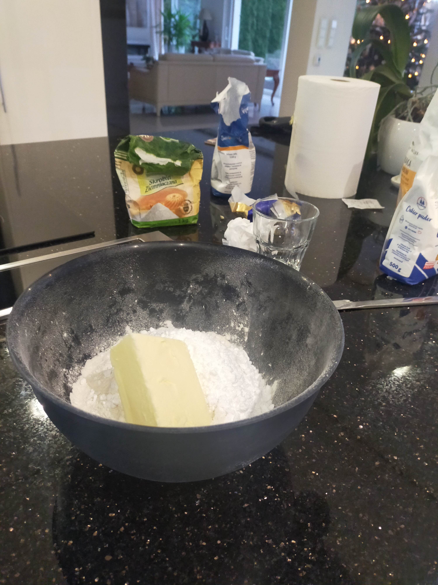
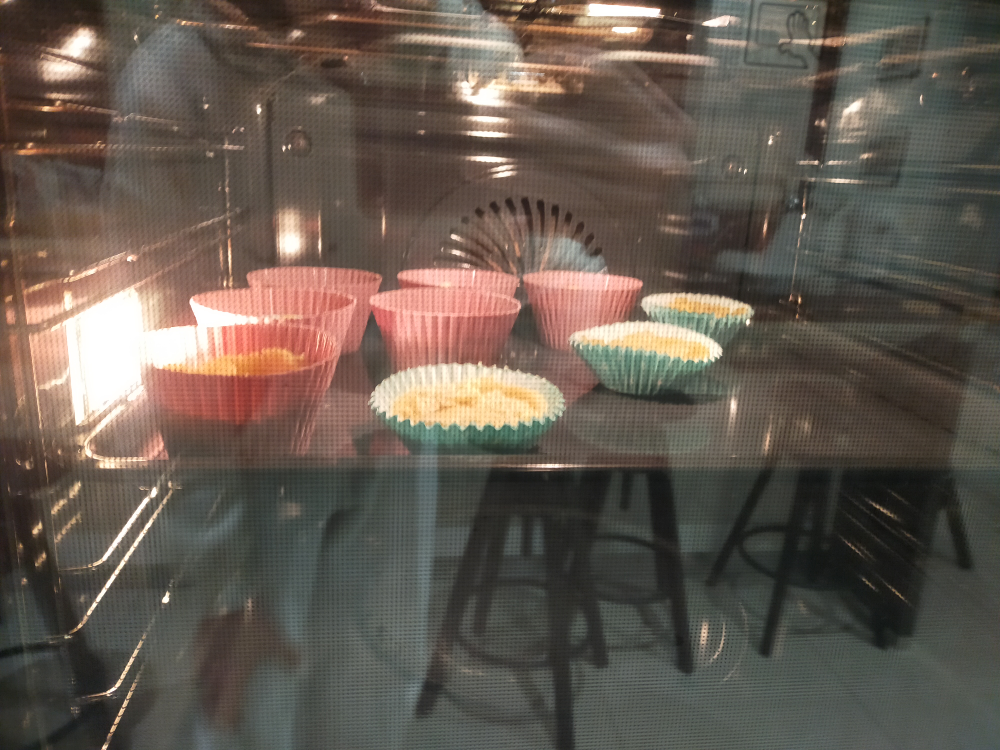

My name is Maja, on the internet more known as "The™ J", or just "J", but you can call me Majka or Majcia :3.
I'm a 14 year old born in 2010 (yeah 2010 people are now 14 💀) bisexual trans girl (she/her),
I was born in Poland and I've lived here my whole life (I'm not helping the stereotype aren't I?),
cześć wszystkim Polakom odwiedzającym tą stronę  .
.
Games? What Games do I play?
Well, the last game that I played while writing this website was Martial Law (free game on steam about communism in Poland),
and Awaria (Peak game made by the guy who created Helltaker, it's free on steam so go play it NOW),
I 100% Awaria, got the cupcake recipe, and actually baked the cupcakes (I REALLY like baking and cooking)

apart from that I'm currently 100%'ing Celeste (again, who would've guessed),
I like playing Minecraft or Lethal Company with my friens every now and then,
and when I'm bored I typically either binge watch youtube, or play
sandbox games like PPG, GMod, S&Box, Brick Rigs, Colony Survival, or ETS2.
Music! I love music! who doesn't?
I can't really explain what kind of music i listen to because its just so random.
You know, I'm Polish, I mostly listen to Polish music :p
BUT
I do have a last.fm tho :3
Well uhh.,.,. except programming, playing games, going outside with my friends and allat stuff that i mentioned
there's not much other things that i do
I um- I'm kindof a boring person actually
sorgy..,,.